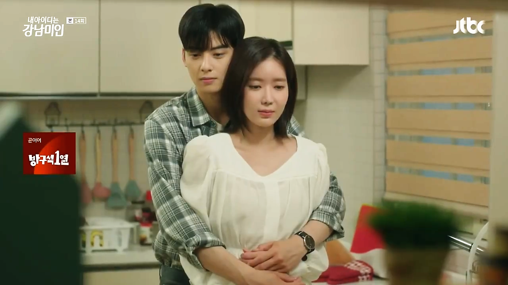
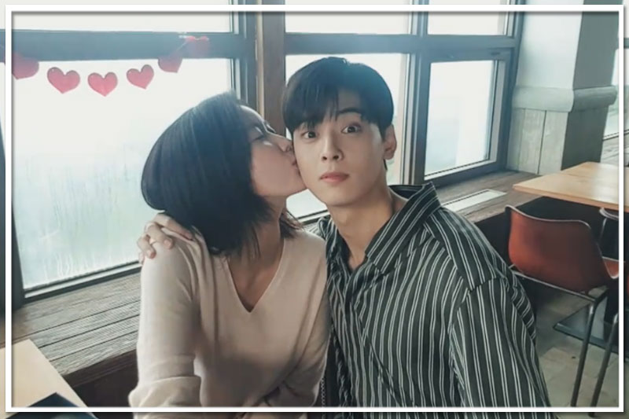
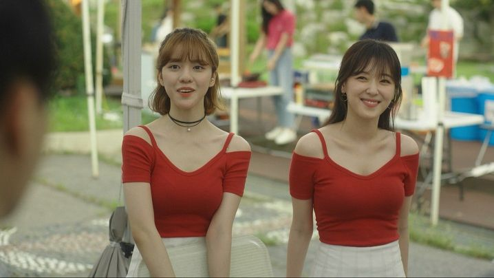
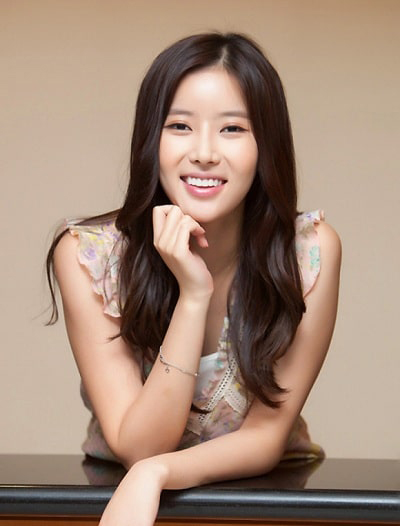
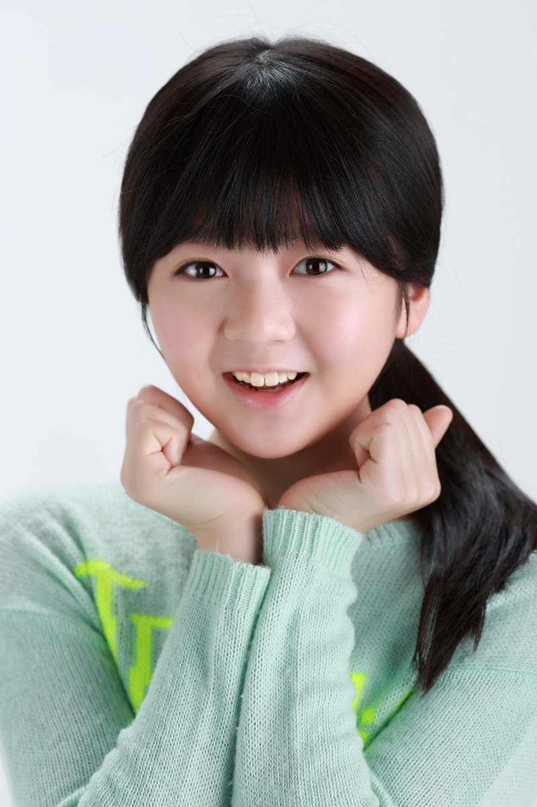
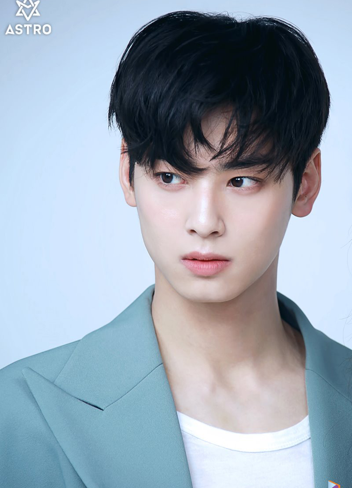
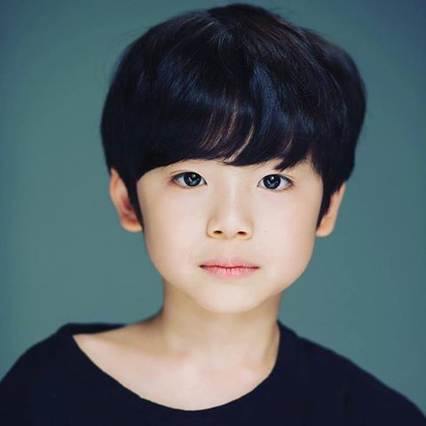
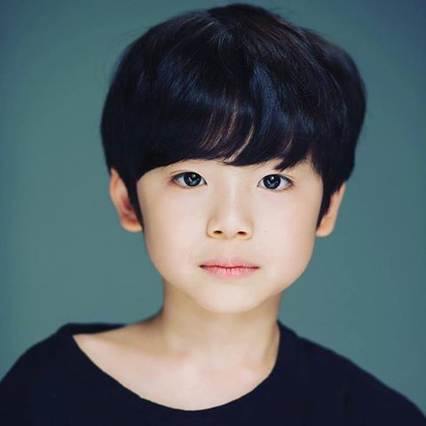
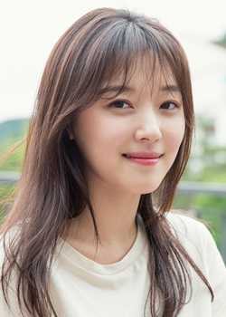
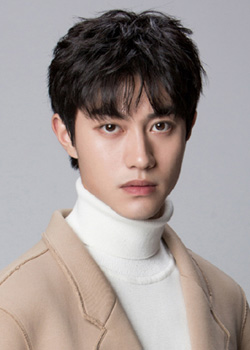

It is a 2018 South Korean television series starring Im Soo-hyang, Cha Eun-woo, Jo Woo-ri and Kwak Dong-yeon. Based on the webtoon of the same name published in 2016 by Naver Webtoon, it centers on the life of a college student who went under cosmetic surgery to evade derision from her bullies yet her decision seems to backfire as her peers ridicule her artificial look. The title of the webtoon and of the TV series alludes to the Korean word gangnammi-in (Gangnam beauty), a derogatory term in South Korea for people who are attractive but look as if they went through a number of plastic surgeries for a pretty face, a hot body or both. It was based on My ID is Gangnam Beauty of Gi Maeng-gi. he series premiered on JTBC on July 27, 2018 and aired every Friday and Saturday at 23:00 (KST). It is one of the highest rated Korean dramas in cable television history. It also garnered praise for its portrayal of issues afflicting South Korean society, particularly on its superficial beauty standards and discrimination on the basis of physical appearance.
Scene Photos
  Movie Info
Kang Mi-rae (Im Soo-hyang) decides to get plastic surgery after years of being bullied because of her looks. Her "rebirth" seems successful at first, but as her life at the university unfolds, her plan starts to backfire. The pressure of being a "pretty girl" begins to pressure her and, worse, those who can see through her surgery ridicule her and tag her as the "Gangnam plastic surgery monster." The drama follows Mi-rae's story of recovering self-esteem as she gets to know her classmate, and former schoolmate in middle school, Do Kyung-seok (Cha Eun-woo).
- Genre: Coming of age/Romantic-Comedy
- Director: Choi Sung-bum
- Writer: Choi Soo-young
- Original Release: July 27 –September 15, 2018
- No. of Episodes: 16 Episodes
Cast
  Im Soo-hyang as Kang Mi-rae, Jeon Min-seo as young Kang Mi-raeA timid and insecure girl who has low self-esteem due to her "ugly" appearance. She desires to live a "normal" life and does not like standing out. After being bullied throughout her middle school and high school, she finally decides to undergo cosmetic surgery prior to starting college. As she enters the university, she starts to feel the pressure of being "beautiful" and "popular" among her peers. She aspires to be a perfumer.
 
Cha Eun-woo as Do Kyung-seok,
Shin Jun-seop as young Do Kyung-seok,
Moon Woo-jin as child Do Kyung-seok.

Cha Eun-woo as Do Kyung-seok,
Shin Jun-seop as young Do Kyung-seok,
Moon Woo-jin as child Do Kyung-seok.
A handsome college student who possesses both intelligence and wealth, but secretly harbors emotional scars from his unhappy home environment. He is indifferent about what others think, thus appearing cold and distant; however, he does have a caring side within him. In particular, he does not care about beauty or physical appearances despite being praised for his good looks.
 Jo Woo-ri as Hyun Soo-a.The most popular girl in the chemistry department due to her beautiful appearance. She appears innocent but her actions prove otherwise.
 Kwak Dong-yeon as Yeon Woo-youngA chemistry graduate and teaching assistant. He is popular among the students for his handsome appearance and friendly persona. He falls for Kang Mi-rae for her looks but grows to love her personality.
Production
- Executive producer(s):
- wang In-roe
- Jo Jun-hyung
- Kim Dong-hyun
- Producer(s):
- Choi Young-joong
- Jang Ji-yeon
- Park Hwa-jin
- Kim Kyung-tae
- Yang Se-jin